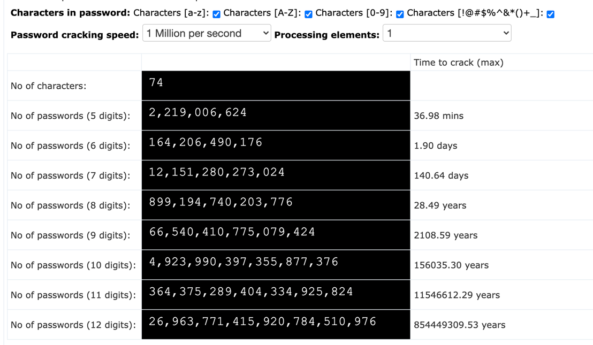

Ways Of Attack
1. Password attacks
Passwords are the primary access verification tool for most people, making them an attractive target for hackers. Attackers can obtain passwords through various methods, such as finding written copies, intercepting network transmissions, or using social engineering tactics to trick users into revealing their passwords.
Brute-force attacks and dictionary attacks are common techniques used by hackers to guess passwords. Brute-force attacks use personal information, such as names, birthdates, or hobbies, to try different password combinations. Dictionary attacks use common words and phrases to guess the password.
Hackers may also learn from their failed attempts, adjusting their guesses based on the passwords that did not work.
Time required to brute force a password
Youtube
2. Phishing attacks
A phishing attack occurs when a malicious actor sends emails that seem to be coming from trusted, legitimate sources in an attempt to grab sensitive information from the target. Phishing attacks combine social engineering and technology and are so-called because the attacker is, in effect, “fishing” for access to a forbidden area by using the “bait” of a seemingly trustworthy sender.
To execute the attack, the bad actor may send a link that brings you to a website that then fools you into downloading malware such as viruses, or giving the attacker your private information. In many cases, the target may not realize they have been compromised, which allows the attacker to go after others in the same organization without anyone suspecting malicious activity.